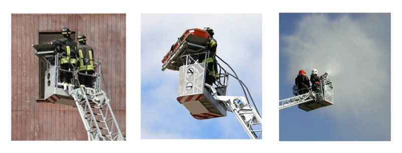
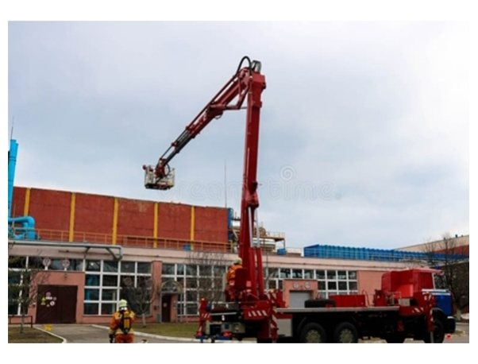
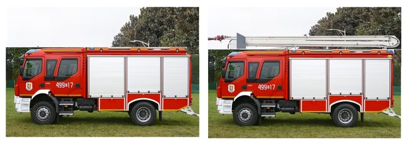
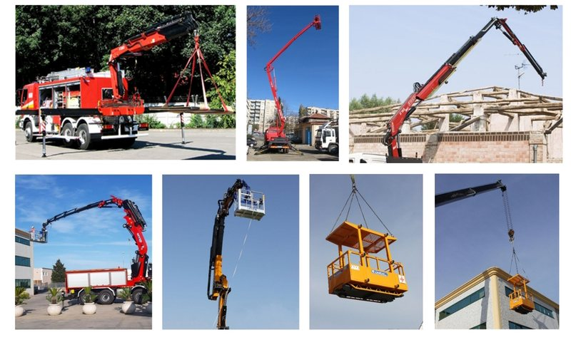
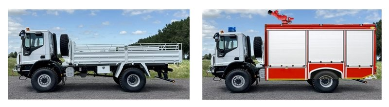
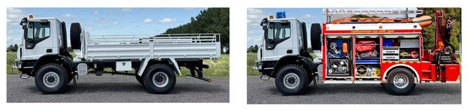

Сервиз и трансформации на пожарни автомобили
Вземете офертаПожарни подемни и спасителни машини
Пожарите в жилищни и административни сгради над третия етаж винаги са сериозно предизвикателство за пожарникарите, тъй като те трябва да изпълняват едновременно две много важни задачи: гасене на пожара и спасяване на хора. В повечето случаи при големи пожари тези две дейности трябва да се извършват паралелно, защото не е възможно гасенето на пожара да започне след спасяването на хората или обратно. Много пожарни служби нямат пожарни автомобили с повдигащи устройства, което излага на сериозен риск живота и здравето на хората и на пожарникарите.
Други пожарни служби разполагат с комбиниран пожарен автомобил, оборудван с кош за спасяване на хора и лафетен струйник, монтиран на спасителния кош. Истината е, че такъв комбиниран пожарен автомобил (автовишка или автостълба) не може да изпълнява едновременно двете си основни функции – гасене и спасяване. Ако пожарникар от коша гаси с лафетния струйник покривни конструкции или пожари в жилища и офиси над третия етаж, той не може да участва в спасяването на хора, и обратно – ако участва в спасяването на хора, не може да гаси с лафетния струйник от коша на пожарния автомобил.

Описаното фактическо положение налага концептуални изводи и корекции в тактиката и техниката за спасяване на хора и гасене на пожари от третия етаж нагоре. Тези концептуални корекции трябва да изключат обединяването в една подемна машина на двете основни функции – едновременно гасене на пожара и спасяване на хора. Паралелното и ефективно изпълнение на тези две отделни дейности изисква те да се извършват от две отделни специализирани машини. Едната машина трябва да бъде пожарен автомобил с лафетен струйник, монтиран на повдигащо устройство, който само гаси пожари в покривни конструкции или в жилища и офиси от третия етаж нагоре. Другата машина трябва да бъде пожарен аварийно-спасителен автомобил с повдигащо устройство с кош за спасяване на хора, разполагащ с пълен комплект реанимационно и друго спасително и помощно оборудване, необходимо в такива ситуации.
За решаването на тези проблеми BULFIRE Ltd. предлага две различни решения:
1.1. Производство и доставка на нови отделни машини – пожарни автомобили с повдигащи устройства с монтирани лафетни струйници за гасене на пожари до 10 етажа и аварийно-спасителни автомобили, оборудвани със спасителен кош за спасяване на хора, с пълен комплект реанимационно и друго спасително и помощно оборудване, необходимо в такива ситуации.
1.2. При ограничен бюджет на пожарните служби алтернативно предлагаме оборудване на пожарни автомобили в експлоатация с повдигащи устройства с монтирани лафетни струйници за гасене на пожари до 10 етажа и трансформиране на съществуващи автомобили в пожарни аварийно-спасителни автомобили с повдигащи устройства и кош за спасяване на хора.


Трансформации на пожарни автомобили
BULFIRE Ltd. извършва трансформации на пожарни и други камиони чрез монтаж на допълнително подемно, гасително или спасително оборудване. Трансформацията на пожарни или други камиони в експлоатация или извън експлоатация в други видове специализирани камиони с нови специализирани надстройки е дейност с висока техническа и икономическа ефективност за общината или пожарната служба, която води до намаляване на сроковете за доставка и на цената до 5–10 пъти в сравнение с покупката на нова машина с подобна специализирана надстройка.
В повечето общини има камиони, които не се използват. Вместо да бъдат бракувани, тези камиони могат да бъдат трансформирани в други видове машини с нови специализирани надстройки – пожарни и аварийно-спасителни автомобили, кранове, работни подемни платформи, машини за миене на улици и други. Специализацията ни в производството, трансформацията и хомологацията на преоборудвани камиони позволява на общините да осъществят намеренията си за придобиване на нова специализирана техника с минимални средства.


Подобна трансформация е възможна и при тракторите, ако общината разполага с такива. Допълнителна информация за трансформацията на трактори за изпълнение на различни други дейности ще намерите на този линк: https://bulfire.ecoes.eu/fire-tractor/.
Сервиз на пожарни и други специални надстройки
BULFIRE Ltd. извършва сервиз на специализираните надстройки на пожарни автомобили и други специални превозни средства независимо от марката, модела и годината на производство.
Сервизът на пожарни и други специални надстройки включва следните дейности:
- Частичен или основен ремонт на пожарната надстройка, включително подмяна на основни възли при необходимост.
- Доставка на цели възли и резервни части за надстройката на пожарния автомобил и за преносими помпи за ремонт в пожарните служби.
- Монтаж на подемно оборудване с дистанционно управляван лафетен струйник за гасене на покривни конструкции и пожари в сгради до 10 етажа върху пожарни автомобили в експлоатация.
- Монтаж на подемно оборудване със спасителен кош за спасяване на хора до 10-ия етаж на жилищни или административни сгради върху пожарни автомобили в експлоатация.
- Трансформация на различни видове неизползвани камиони в пожарни, аварийно-спасителни или други специални превозни средства. При трансформацията всички въпроси, свързани с монтажа на вал за отбор на мощност (PTO), трансмисията на помпата и други, се решават от нас.
- Други сервизни дейности, свързани с ремонта или трансформацията на камиони и трактори в други видове специални машини (комунални, подемни, сметосъбиращи, за зимно поддържане на пътищата, самосвали и др.).



Трансформацията на съществуващо шаси с нова специализирана надстройка в друг вид специализиран камион е дейност с висока техническа и икономическа ефективност, която намалява цената на придобиване до 5–10 пъти в сравнение с покупката на нова машина с подобна специализирана надстройка. Високата експлоатационна годност на трансформираните камиони с нови специализирани надстройки и ниската цена на придобиването им ги правят много подходящи за общини, пожарни служби и доброволни пожарни формирования с ограничен бюджет, защото тези институции на практика постигат същия експлоатационен ефект като с нова подобна машина, но на много по-ниска цена.
За всички въпроси, свързани с доставката на цели възли и резервни части, сервиза или трансформацията на специални камиони и трактори, моля, свържете се с нас.